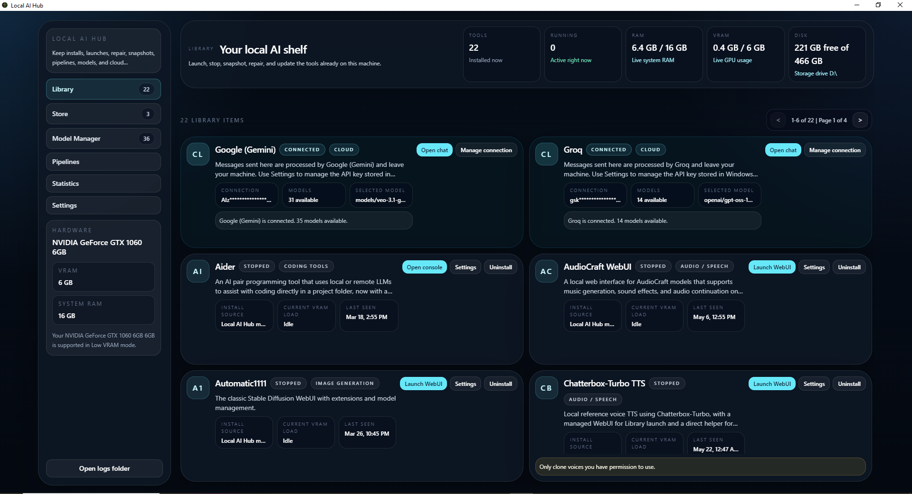
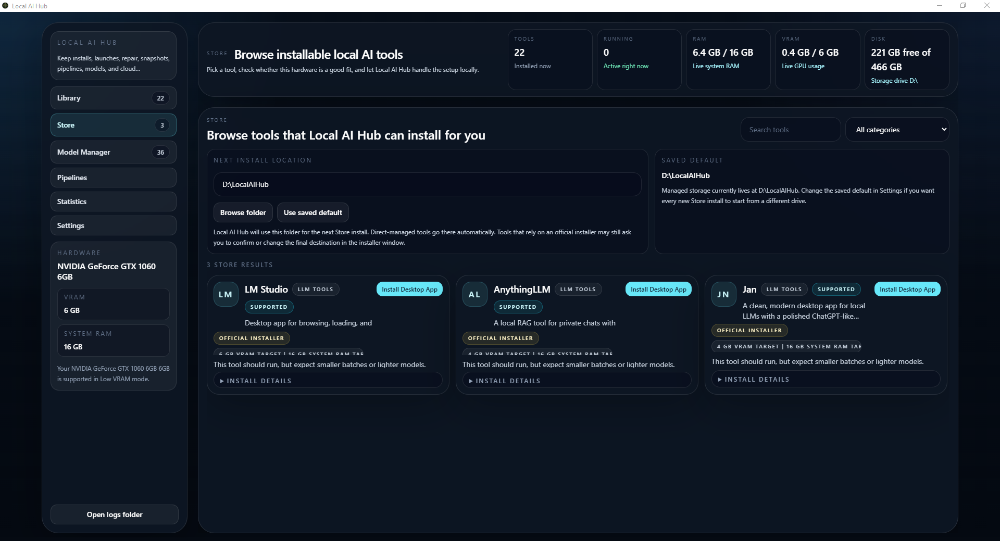
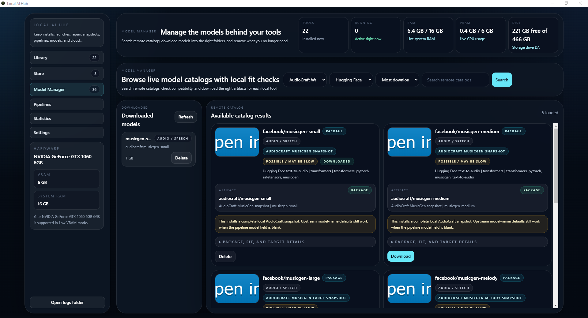
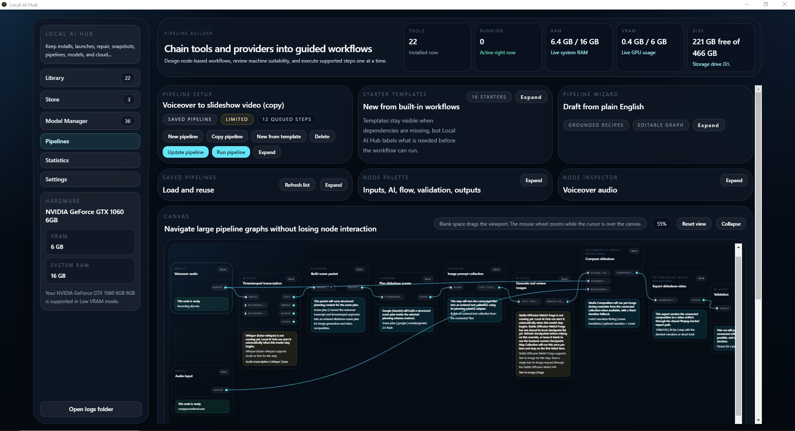
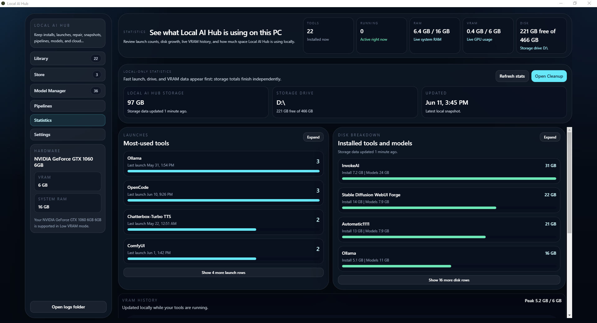
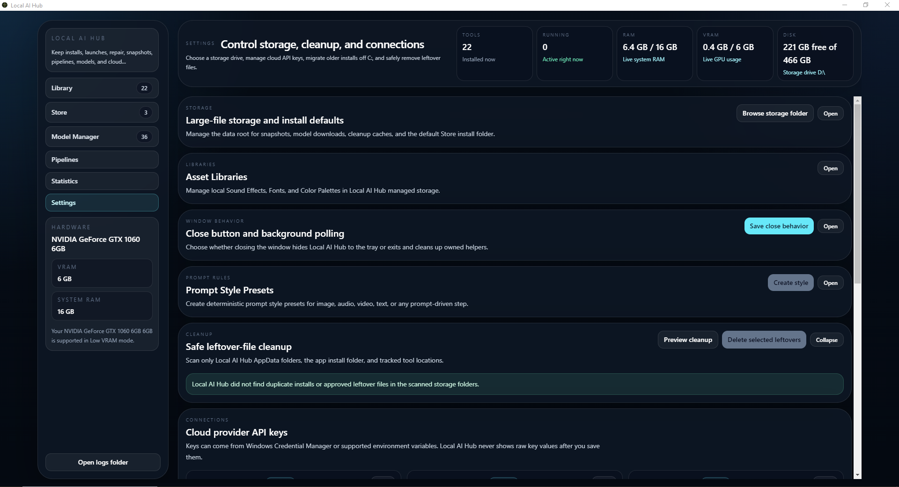

Tool library and store
Install supported tools, see what is running, and keep launch, update, repair, snapshot, and uninstall controls together.
Local AI tools, one Windows desktop
Local AI Hub helps you install, launch, monitor, repair, and organize supported AI tools while keeping local workloads and files on your PC.
Windows only. The current installer is unsigned and may trigger a SmartScreen, browser, or antivirus warning.

What it does
Browse installable tools, review hardware suitability, manage models, create reusable pipelines, track local resource use, and recover supported installations from a single interface. Local AI Hub is under active development, so tool support and readiness guidance should be treated as helpful estimates rather than guarantees.
Features
Install supported tools, see what is running, and keep launch, update, repair, snapshot, and uninstall controls together.
Search supported catalogs, review fit information, download model assets, and manage local copies.
Build reusable text, image, audio, and video workflows across supported local tools and optional providers.
Review GPU, VRAM, RAM, storage, launch activity, and local usage history without sending analytics elsewhere.
Save snapshots and use supported repair actions when a managed installation stops working.
Choose storage locations, clean managed files, and keep the app available from the system tray.
Screenshots





Local-first and privacy
Managed files and configuration stay local. Network access is used when you request tool, dependency, update, or model downloads. Cloud providers are optional where supported; their requests leave your PC, and you provide your own provider keys where applicable.
Hardware expectations
Local image, video, and audio generation can require substantial GPU memory, storage, and time. Local AI Hub provides suitability or readiness guidance where supported, but it cannot guarantee that every upstream tool or model will run on a particular PC.
Download
Download LocalAIHub-Setup-x.y.z.exe. The
.blockmap and latest.yml assets support the
release/update flow and are not installers.
{kind=link}
{kind=link}
{kind=link}
{kind=link}
{kind=link}
{kind=link}